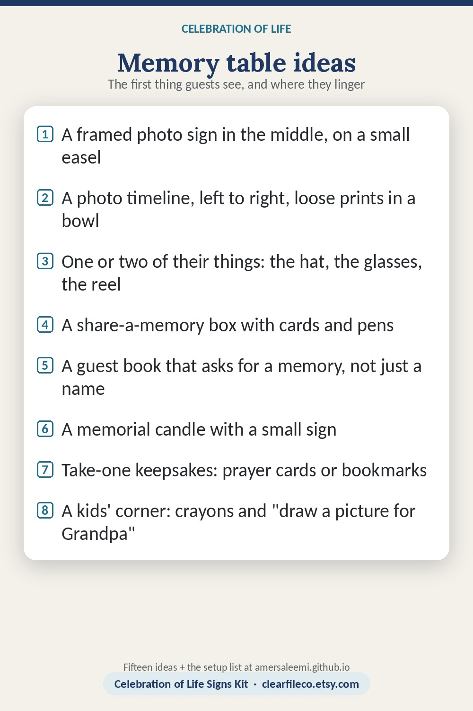

Celebration of life memory table ideas
A memory table is the first thing guests see and the place they linger. It does not need to be elaborate: a cloth, a few photos, one object that was unmistakably theirs, and a way for people to leave something behind.
- A framed sign in the middle: the name, the dates, the photo and a line. An 8 x 10 frame or a small easel; 16 x 20 on a big easel for a large room.
- A photo timeline: baby, school, wedding, work, grandchildren, last summer, left to right. Mix frames with loose prints in a bowl people can pick up.
- Their things: the hat, the reading glasses, the fishing reel, the apron, the baseball glove. One or two, not the whole closet.
- A share-a-memory box: cards and pens beside a box or a jar, with a sign that says what to do. The family reads them in the weeks after.
- A guest book that asks for more than a name: "a memory of Eleanor" at the top of each page, or a sign-in sheet with a column for how you knew her.
- A memorial candle with a small sign; a battery candle if the venue will not allow a flame.
- Take-one keepsakes: prayer cards or bookmarks in a tray, with a "please take one" sign.
- Flowers in their colors, or from their garden, in a vase they owned.
- A playlist on a speaker, low: the songs they played in the car.
- The recipe: their famous cookies or the family dish, on the table or on the buffet, with the recipe card next to it.
- A kids' corner: a box of crayons and "draw a picture for Grandpa" pages, so children have something to do with their hands.
- A slideshow on a tablet or a frame that loops, for the photos that would not fit on the table.
- Military, service or faith items: the folded flag, the badge, the rosary, the medals, in a shadow box or beside the photo.
- A "where they lived" map with pins, or the places they traveled, if that was their thing.
- Thank-you cards ready to mail, pre-addressed in the weeks after; the memory cards tell you who to thank for what.
Setting it up
- A cloth that reaches the floor hides the boxes under the table.
- Three heights: frames at the back, the sign and the candle in the middle, cards and pens in front.
- Signs for the parts guests must act on: sign the guest book, share a memory, please take one.
- One person owns the table on the day: sets it up, keeps pens, packs the cards.
The matching printables
Celebration of Life Signs Kit on Etsy →Funeral Guest Book Template on Etsy →Celebration of Life Signs Kit: the memory table sign, eight 5 x 7 table signs and share-a-memory cards in six designs. Funeral Guest Book Template: sign-in sheets, memory pages and a table sign that match. Instant download; editable in Canva, Google Slides and PowerPoint.

Save it to Pinterest so you can find it again. Free to share; please link to the page rather than copying it.